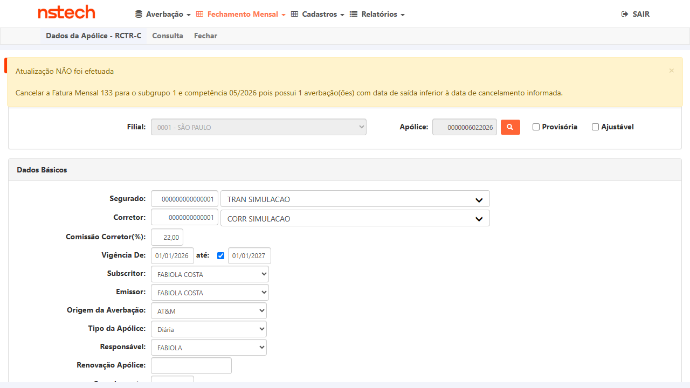
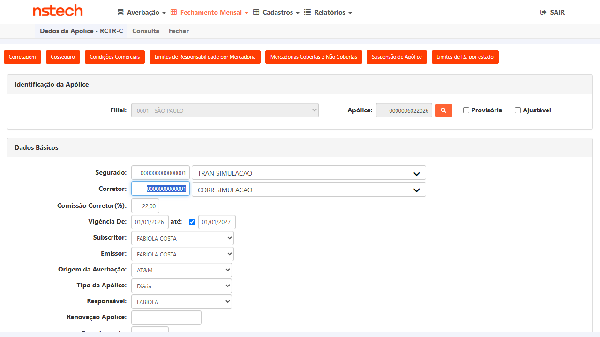

1. Critério de Aceite Violado
CA do fix PBI-6719 (Tasks #6821 + #6932): Ao tentar cancelar uma apólice na data igual ao último dia do mês, quando existe fatura fechada para a mesma competência, o sistema deve aceitar e salvar o cancelamento normalmente — exibindo mensagem de sucesso.
O fix removeu o bloqueio para esse cenário. O critério de aceite é que o save seja concluído com êxito.
O fix removeu o bloqueio para esse cenário. O critério de aceite é que o save seja concluído com êxito.
✅ Esperado:
Data cancelamento = 31/05/2026 → clicar Atualizar
→ sistema salva e exibe:
"Atualização dos dados efetuada com sucesso"
Data cancelamento = 31/05/2026 → clicar Atualizar
→ sistema salva e exibe:
"Atualização dos dados efetuada com sucesso"
❌ Obtido:
Data cancelamento = 31/05/2026 → clicar Atualizar
→ Erro 500:
"Value was either too large or too small for an Int16" em CadApolice21.aspx.cs:2266
Data cancelamento = 31/05/2026 → clicar Atualizar
→ Erro 500:
"Value was either too large or too small for an Int16" em CadApolice21.aspx.cs:2266
2. Dados do Cenário
| Campo | Valor |
|---|---|
| Ambiente | CITWEB KOVR HML — Nacional |
| URL | https://kovr-hml-faturamento.nsseg.com.br/dadosapolice/Default.aspx |
| Build | V 1.0.260602.1734 |
| Usuário | ROT_AUTO (perfil GESTOR) |
| Apólice | 0000006022026 |
| Ramo | 21 — RCTR-C |
| Filial | 0001 — SÃO PAULO |
| Tipo | Diária |
| Vigência | 01/01/2026 – 01/01/2027 |
| Segurado | TRAN SIMULACAO |
| Fatura de massa | Fatura 133 — competência 05/2026 — emitida 08/06/2026 |
| Data de cancelamento testada | 31/05/2026 — último dia do mês, mesma competência da fatura |
3. Passos Realizados
| # | Ação | Resultado | Status |
|---|---|---|---|
| 1 | Login em kovr-hml-faturamento.nsseg.com.br/login/ com ROT_AUTO / T7Jjm6xF |
Login efetuado. Tela inicial CITWEB carregada. | ✓ OK |
| 2 | Fechamento Mensal → Impressão → Ramo 21, competência 05/2026 — confirmar fatura existente | Fatura 133 encontrada, competência 05/2026, emitida 08/06/2026. | ✓ OK |
| 3 | Navegar para Dados da Apólice RCTR-C. Pesquisar apólice 6022026, Filial 0001 - SÃO PAULO |
Apólice carregada: Ramo 21, vigência 01/01/2026–01/01/2027. | ✓ OK |
| 4 | Preencher campo Cancelamento com 31/05/2026 (último dia do mês) | Campo aceita o valor — sem bloqueio front-end. Comportamento esperado após o fix. | ✓ OK |
| 5 | Clicar no botão Atualizar | Erro 500: "Value was either too large or too small for an Int16" em CadApolice21.aspx.cs:2266. Cancelamento NÃO salvo. | ✗ FALHA |
4. Resposta do Servidor — Erro 500
System.OverflowException: Value was either too large or too small for an Int16.
at DadosApolice.CadApolice21.btnSalvarDadosApolice_Click(Object sender, EventArgs e)
in D:\a\1\s\DadosApolice\CadApolice21.aspx.cs:line 2266
at System.Web.UI.WebControls.LinkButton.OnClick(EventArgs e)
at System.Web.UI.WebControls.LinkButton.RaisePostBackEvent(String eventArgument)
at System.Web.UI.Page.ProcessRequestMain(Boolean includeStagesBeforeAsyncPoint,
Boolean includeStagesAfterAsyncPoint)
⚠️ O fix do PBI-6719 removeu a validação que antes impedia chegar a esse trecho com
data_cancelamento = último dia do mês.
Um valor numérico derivado dessa data (ou da competência 202605) excede o range do tipo Int16 (–32.768 a 32.767).
5. Hipótese de Causa Raiz
Arquivo:
Hipóteses (investigar em ordem):
1. Código de competência calculado como
2. Cálculo de diferença de dias entre datas (cancelamento vs emissão da fatura) produz valor > 32.767 e é atribuído a variável
3. O fix removeu um
Ação para o dev: inspecionar
DadosApolice/CadApolice21.aspx.cs, método btnSalvarDadosApolice_Click, linha 2266Hipóteses (investigar em ordem):
1. Código de competência calculado como
ano × 100 + mês → 2026 × 100 + 5 = 202605 excede Int16.MaxValue (32.767). Se alguma variável local para competência foi declarada como short, esse seria o overflow.2. Cálculo de diferença de dias entre datas (cancelamento vs emissão da fatura) produz valor > 32.767 e é atribuído a variável
short.3. O fix removeu um
return prematuro que existia no branch "último dia do mês com fatura", expondo um trecho de código que assumia que esse cenário nunca chegaria com datas de 2026 (competência > 32.767).Ação para o dev: inspecionar
CadApolice21.aspx.cs a partir da linha ~2200, identificar variável short/Int16 que recebe valor calculado a partir de d_can_apo ou competência, e ampliar para int.
6. Contraprova — Cenários que Funcionam Corretamente
CT-003 e CT-002 executaram com sucesso — provando que o problema é isolado ao caminho liberado pelo fix (último dia do mês):
✅ CT-6719-003 PASS — 30/04/2026 (mês anterior à fatura)
30/04 → mês anterior à fatura 05/2026. Sistema bloqueou com mensagem amigável. Não chegou à linha 2266.

✅ CT-6719-002 PASS — 15/05/2026 (mesmo mês, dia intermediário)
15/05 → mesma competência, dia intermediário. Sistema bloqueou com mensagem amigável. Não chegou à linha 2266.

❌ CT-6719-001 FAIL — 31/05/2026 (último dia do mês — cenário liberado pelo fix)
Único caminho que alcança a linha 2266. Os outros dois caem nos branches de validação que retornam antes.
Único caminho que alcança a linha 2266. Os outros dois caem nos branches de validação que retornam antes.
7. Evidências

Passo 2 — Confirmação de massa
Fatura 133 para competência 05/2026 confirmada em Fechamento Mensal → Impressão

Passo 3 — Apólice carregada
Apólice 0000006022026 carregada no formulário DadosApolice (Ramo 21, Filial 0001)

Passo 4 — Campo preenchido
Campo Cancelamento = 31/05/2026 — último dia do mês da fatura, sem bloqueio front-end

Passo 5 — FALHA ao clicar Atualizar
Resultado: Erro 500 — "Erro interno no servidor" ao tentar salvar o cancelamento

Passo 5 — Detalhe do erro
Detalhes: Int16 overflow em btnSalvarDadosApolice_Click, CadApolice21.aspx.cs:2266